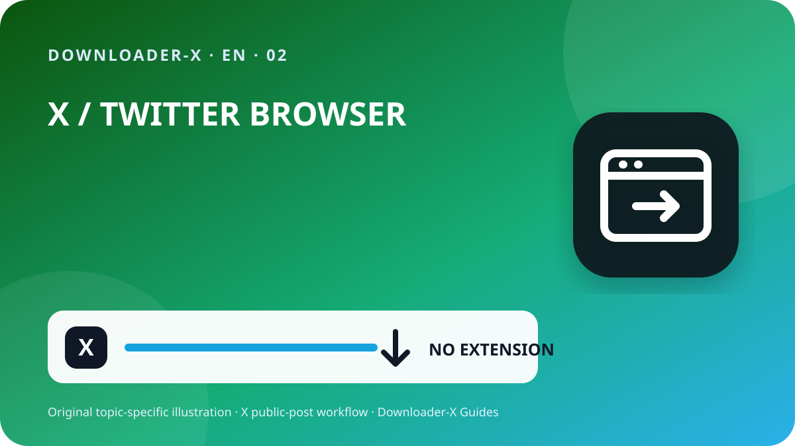

Quick answer
download twitter videos chrome — To save an X video that you own or are authorized to download, open the individual public post, use the Share control to copy its permanent URL, paste that URL into the Downloader-X X Video Downloader , and choose one of the real MP4 qualities shown. Save the file, then play the beginning, middle, and end to confirm picture and audio. Keep the source URL and permission record with the file.

Three steps with Downloader-X
- Open the individual post. Do not copy a profile, search result, timeline, embedded preview, or home-page address.
- Open the X downloader, paste the tested public post URL, and start processing once. Wait for the actual result rather than clicking repeatedly. A normal public-link workflow should not require an X password, two-factor code, exported browser cookie, unknown extension, remote-control session, or identity rotation.
- If the result is not a real video, delete it rather than opening an unexpected installer or document. Return to the public source, copy a fresh URL, and repeat the checks. A trustworthy workflow exposes an error instead of presenting a wrong file as a successful download.
What this search means
download twitter videos chrome. Public posts only. Formats and quality depend on the real options returned by the source.
2. Copy the exact post URL
Open the individual post. Do not copy a profile, search result, timeline, embedded preview, or home-page address.
Use the Share control. Select Copy link to Post , which is the link-copying method documented by X Help.
Inspect the address. A permanent post URL normally points to x.com or twitter.com and contains a status identifier.
Test it in a new tab. Confirm that it opens the same account, text, thumbnail, and video.
Retain the source. Save the URL with the downloaded file so attribution and permission can be checked later.
A short or redirected link may still resolve correctly, but test the final destination before processing. If the copied URL opens the wrong post, return to X and copy it again rather than guessing or editing the identifier manually.
3. Paste the verified URL into Downloader-X
Open the X downloader, paste the tested public post URL, and start processing once. Wait for the actual result rather than clicking repeatedly. A normal public-link workflow should not require an X password, two-factor code, exported browser cookie, unknown extension, remote-control session, or identity rotation.
5. Save on iPhone, Android, Windows, or Mac
Copy the post link in the X app or browser, open the downloader in Safari, paste the URL, and select an available MP4. Browser downloads commonly appear in the Files app, often under Downloads or the location selected in Safari settings. Open the file in Files first. After verifying it, move or share it only when your permission allows that use.
Use the post Share menu to copy the URL, open Downloader-X in a current browser, and choose the real media option returned. Check the browser's Downloads view or the device's Files application. If storage access is blocked, use the browser's normal permission controls instead of installing an unrelated download-manager application.
Copy the permanent post URL, paste it into the X downloader, select the needed quality, and use the browser's save control. Check the Downloads folder and browser download history. Rename the file only after confirming that it is a genuine video; changing an HTML error page to an .mp4 extension does not convert it.
Security and privacy checks
A normal public-link tool should not require your X password, two-factor code, browser cookies, remote computer access, an executable installer, or a notification subscription. Avoid pages that ask you to disable device protection, install a mysterious codec, run code from a comment, or approve an extension unrelated to the requested file.
Before opening a result, confirm its extension and origin. Video content should not unexpectedly arrive as an application. Keep the browser and operating system current, and use built-in download controls. On shared devices, move authorized files out of public folders and remove sensitive source links from shared histories when appropriate.
Troubleshooting: download does not start or the file is wrong
Return to the video post and copy its link from the Share menu. A profile identifies an account, not one media item. A timeline or search page can change and is not a stable input for the exact video.
The media may be protected or restricted. Do not share credentials, export cookies, rotate identities, or attempt to bypass access controls. Ask the owner for an authorized copy or choose content that is genuinely public.
Confirm that the post still exists, still contains a native video, and opens from the copied URL. Refresh once and try a current browser if the page failed to render. A different browser can fix a display issue; it cannot create media that the source no longer provides.
Delete the incorrect file. Do not rename it to .mp4. Copy the original public post link again and select a verified media option from the real result. Review the browser's download details for the reported type and origin.
Confirm that the original post has audio and the device is not muted. Test the file in another trusted player. If the selected variant was video-only, return to the result and choose a combined option when one is available.
Check the Downloads folder before retrying and sort by date. Repeated clicks can create duplicate filenames without improving quality. Keep the complete copy and remove incomplete duplicates only after verification.
6. Verify the saved file
If the result is not a real video, delete it rather than opening an unexpected installer or document. Return to the public source, copy a fresh URL, and repeat the checks. A trustworthy workflow exposes an error instead of presenting a wrong file as a successful download.
Build a repeatable device workflow
Use one predictable folder for temporary downloads and a separate project folder for verified files. A practical filename can include a short topic, creator handle, source date, and quality, for example event-summary_creator_2026-08-30_720p.mp4 . Avoid filenames that expose private information or imply ownership you do not have.
After verification, keep only the variants you need. Multiple quality copies consume space and make later selection confusing. Back up an authorized file only when the project requires it, and protect cloud folders that contain personal or unpublished material. On a shared computer, clear temporary copies and sign out of accounts without erasing records required for permission or attribution.
For editorial, classroom, or research use, keep a short log of what was checked: exact URL, public-access result, selected variant, file size, playback result, rights basis, and any credit requirement. This makes the process reviewable and helps another person understand why the file was retained.
Why a focused X guide is more useful than a generic downloader list
A generic list often repeats phrases such as “fast,” “free,” or “HD” without explaining what happens when a link points to a reply, when 1080p is absent, where an iPhone stores the file, or why an HTML response is not a video. This guide focuses on those decision points. The objective is not to promise every format for every post; it is to help a reader reach a correct, verifiable result with an authorized public source.
The same standard applies when the interface or extraction provider changes. The permanent checks remain stable: identify the exact post, confirm public access, use the real options returned, inspect the saved file, and retain permission information. These checks prevent false success messages from being treated as completed downloads.
1. Confirm that the X post is public and usable
Start with access and permission, not the download button. Open the exact post in a normal browser tab and confirm that the video plays. A public post can be viewed broadly under the account's current visibility settings, while a protected post is limited to approved followers. A downloader should not be used to bypass protection, login requirements, regional restrictions, age gates, deleted content, or subscriber-only access.
Public visibility does not remove copyright or privacy rights. The safest cases are your own upload, a creator-provided download, media covered by a compatible license, or content you have clear permission to save. Permission for offline viewing is not automatically permission to repost, edit, monetize, sell, or place the clip in an advertisement.
Visibility answers who can watch. Permission answers what you may do with the media. Treat these as separate checks and keep evidence of the source and license.
Audit the source before you save anything
A strong X video workflow begins with a source audit. Record the account handle, the visible post date, a short description of the clip, the permanent post URL, and the reason you are allowed to keep a copy. This takes less than a minute and prevents a common problem: a file survives on a device while its origin and permission are forgotten. When a project involves several clips, create a simple text or spreadsheet record rather than relying on memory or an automatically generated filename.
Frequently asked questions
download twitter videos chrome?
Public posts only. Formats and quality depend on the real options returned by the source.
Can I download from a protected X account?
No. This guide covers public posts and does not provide a method to bypass protected or restricted access.
Where does the video save on iPhone?
Downloads commonly appear in the Files app, often under Downloads or the location selected in Safari settings.
Can I use both x.com and twitter.com links?
Use the permanent URL for the exact public post and test that it opens the same post before processing.
What if the downloaded file is HTML?
Delete it, copy the original public post URL again, and select a verified video option. Do not rename HTML to MP4.
Related X guides
Use the exact public post link
Public posts only. Formats and quality depend on the real options returned by the source.
Open Downloader-X